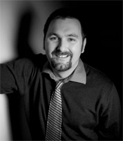

WORKSHOP 2
Survey of Commonality with other Disciplines
Date: Thursday, July 25, 2013
Agenda: Schedule of events PDF
Purpose: (i) Explore areas of commonality and difference, (ii) identify common metadata standards that could be designed to allow generic access and indexing of cross-disciplinary research data, and (iii) identify cross-disciplinary services that would support data preservation (e.g. software repositories).
Inputs: A discussion framework similar to that of Workshop 1 will be developed and will also be used to conduct individual or small group discussions with targeted colleagues not available for the workshop (e.g. the research staff involved in archiving the Sloan Digital Sky Survey-II).
Outcomes: Provide extensive information about preservation efforts in other disciplines.
Round Table Discussion Notes PDF
Panelists
Dr. George O. Strawn
Director, National Coordination Office (NCO)
National Science Foundation
Workshop Presentation PDF
Dr. George O. Strawn is the Director of the National Coordination Office (NCO) for the Federal government’s multiagency Networking and Information Technology Research and Development (NITRD) Program. He also serves as the Co-Chair of the NITRD Subcommittee of the National Science and Technology Council. The NCO reports to the Office of Science and Technology Policy (OSTP) within the Executive Office of the President.
Dr. Strawn is on assignment to the NCO from the National Science Foundation (NSF), where he most recently served as Chief Information Officer (CIO. Prior to his appointment as NSF CIO, Dr. Strawn served as the executive officer of the NSF Directorate for Computer and Information Science and Engineering (CISE) and as Acting Assistant Director for CISE. Previously, Dr. Strawn had served as the Director of the CISE Division of Advanced Networking Infrastructure and Research, where he led NSF’s efforts in the Presidential Next Generation Internet Initiative.
Prior to coming to NSF, Dr. Strawn was a Computer Science faculty member at Iowa State University (ISU) for a number of years. He also served there as Director of the ISU Computation Center and Chair of the ISU Computer Science Department.
Dr. Strawn received his Ph.D. in Mathematics from Iowa State University and his BA Magna Cum Laude in Mathematics and Physics from Cornell College. He is a Fellow of the American Association to the Advancement of Science.
Dr. Reagan W. Moore
Director, Data Intensive Cyber-Environments
Chief Scientist, Data Intensive Cyber-Environments at RENCI
Professor, School of Information and Library Science
University of North Carolina at Chapel Hill
Workshop Presentation PDF
Reagan Moore is the Director of the Data Intensive Cyber Environments Center at the University of North Carolina at Chapel Hill, professor in the School of Information and Library Science, and Chief Scientist at the Renaissance Computing Institute. Moore coordinates research efforts in development of policy-based data management systems that are used to support data grids, digital libraries, processing pipelines and persistent archives. Moore is the co-principal investigator for the development of the integrated Rule Oriented Data System (iRODS). The iRODS technology automates the application of management policies, automates validation of assessment criteria, and minimizes the labor required to manage massive distributed data collections. The iRODS software is available as an open source distribution at http://irods.diceresearch.org. Moore has a B.S. in physics from the California Institute of Technology (1967), and a Ph.D. in plasma physics from the University of California, San Diego (1978).
Policy-based Data Management Systems
Modern data management systems are evolving from a focus on data management, to a focus on knowledge management. Traditionally preservation has managed authenticity, integrity, chain of custody and original arrangement. Now long term preservation requires the ability to re-create derived data products, and reproduce data driven research results. Policy-based systems capture the associated knowledge in procedures/workflows that are controlled by computer actionable rules. The systems support registration and sharing of workflows, as well as sharing of input and output files. Preservation policies are enforced, administrative functions are automated, and assessment criteria are validated, enabling preservation at scale. Applications include genomics, high energy physics, astronomy, plant biology, seismology, medicine, oceanography, and climate.

Dr. Chris Mattmann
Senior Computer Scientist
NASA Jet Propulsion Laboratory
Workshop Presentation PDF
Chris Mattmann has a wealth of experience in software design, and in the construction of large-scale data-intensive systems. His work has infected a broad set of communities, ranging from helping NASA unlock data from its next generation of earth science system satellites, to assisting graduate students at the University of Southern California (his Alma mater) in the study of software architecture, all the way to helping industry and open source as a member of the Apache Software Foundation. When he's not busy being busy, he's spending time with his lovely wife and son braving the mean streets of Southern California.
Talking Points:
Open Source Communities
- Permissive Licenses
- Apache Software Foundation
Data Science
- Training Data Scientists
- Promoting Data Science
Big Data
- Rapid Science Algorithm Integration
- Intelligent Data Movement
- Automatic Data and Metadata Extraction
Dr. Matthew Mayernik
Research Data Services Specialist
NCAR Library / UCAR Integrated Information Services
National Center for Atmospheric Research (NCAR)
University Corporation for Atmospheric Research (UCAR)
Workshop Presentation PDF
Matt Mayernik is a Research Data Services Specialist in the library of the National Center for Atmospheric Research (NCAR)/University Corporation for Atmospheric Research (UCAR). He has a MLIS and Ph.D. from the UCLA Department of Information Studies. His work within the NCAR/UCAR library is focused on developing research data services. His research interests include data publication and citation, metadata practices and standards, cyberinfrastructure development, data curation education, and social aspects of research data.
Talking Points:
- The geosciences are extremely diverse in data production, management, and distribution processes, ranging from supercomputer simulations that generate petabytes of data to small-scale field teams using Excel spreadsheets.
- Technology is an important factor in implementing data preservation solutions. Equally as important are establishing work routines, organizational processes, and plans/policies that facilitate data preservation as a critical activity.
- Data access is the value proposition of data preservation. Preservation without adequate approaches to enable access are only addressing half of the challenge.
Prof. Michael Witt
Associate Professor of Library Science
Interdisciplinary Research Librarian
Purdue University
Workshop Presentation PDF
Michael Witt is an Associate Professor of Library Science and Interdisciplinary Research Librarian at Purdue University. Professor Witt is the project director for the Purdue University Research Repository (PURR), leading a collaboration of the Libraries, research office, and campus computing in the design and implementation of a campus data repository and supporting data services. He has presented and published in venues such as the Joint Conference on Digital Libraries, International Digital Curation Conference, EDUCAUSE, Open Repositories, ASIST Research Data Access and Preservation Summit, Library Trends, Journal of Library Administration, College & Undergraduate Libraries, and Philosophical Transactions of the Royal Society A. His service to the profession includes chairing the LITA/OCLC Kilgour Award and LITA Library Hi-Tech Award committees and serving on the editorial board of Information Technology and Libraries. Witt is affiliated with the Distributed Data Curation Center (D2C2) at Purdue and serves as the Editor-in-Chief of Databib, an international catalog of data repositories. For more information about Michael Witt, visit http://www.lib.purdue.edu/research/witt.
Dr. Micah Altman
Director of Research
Head/Scientist, Program on Information Science
MIT Libraries, Massachusetts Institute of Technology
Workshop Presentation PDF
Dr. Micah Altman is Director of Research and Head/Scientist, Program on Information Science for the MIT Libraries, at the Massachusetts Institute of Technology. Dr. Altman is also a Non-Resident Senior Fellow at The Brookings Institution. Prior to arriving at MIT, Dr. Altman served at Harvard University for fifteen years as the Associate Director of the Harvard-MIT Data Center, Archival Director of the Henry A. Murray Archive, and Senior Research Scientist in the Institute for Quantitative Social Sciences.
Dr. Altman conducts research in social science, information science and research methods -- focusing on the intersections of information, technology, privacy, and politics; and on the dissemination, preservation, reliability and governance of scientific knowledge.
Talking Points:
Changes in technology and society are greatly affecting the types and quantities of potential data available for social-scientific analysis. Taken as a whole, the evidence base of social science is shifting. The changing nature, and ever increasing quantity of data, offers new opportunities for analysis, but strains our current infrastructure, methods and standards, for collecting, managing, securing and stewarding data.
Dr. Clifford Lynch
Executive Director
Coalition for Networked Information
Clifford Lynch has led the Coalition for Networked Information (CNI) since 1997. CNI, jointly sponsored by the Association of Research Libraries and EDUCAUSE, includes about 200 member organizations concerned with the intelligent uses of information technology and networked information to enhance scholarship and intellectual life. CNI’s wide-ranging agenda includes work in digital preservation, data intensive scholarship, teaching, learning and technology, and infrastructure and standards development.
Prior to joining CNI, Lynch spent 18 years at the University of California Office of the President, the last 10 as Director of Library Automation. Lynch, who holds a Ph.D. in Computer Science from the University of California, Berkeley, is an adjunct professor at Berkeley’s School of Information. He is both a past president and recipient of the Award of Merit of the American Society for Information, and a fellow of the American Association for the Advancement of Science and the National Information Standards Organization.
In 2011 he was appointed co-chair of the National Academies Board on Research Data and Information (BRDI); he serves on numerous advisory boards and visiting committees. His work has been recognized by the American Library Association’s Lippincott Award, the EDUCAUSE Leadership Award in Public Policy and Practice, and the American Society for Engineering Education’s Homer Bernhardt Award.
Dr. Don Petravick
Principal Investigator
Dark Energy Survey Data Management System
National Center for Super Computing Applications
University of Illinois at Urbana-Champaign
Workshop Presentation PDF
Dr. Petravick is currently at NCSA, the national Center for Super Computing Applications, at the University of Illinois at Urbana-Champaign and the Principal Investigator for the Dark Energy Survey Data Management System. This is a production system which will receives Optical Astronomy Images from the Dark Energy Camera, which is located at the Cerro Tollolo Inter American Observatory in Chile. the system produces calibrated images and catalogs of detected objects -- principally stars and galaxies.. Prior to that, he worked at Fermi National Accelerator Laboratory, in a variety of roles, including the Sloan Digital Sky Survey, the Run II collider run, supporting the CDF and D0 experiments, the CMS experiment and the Open Science Grid.
Dr. Line Pouchard
Information Scientist
Scientific Data Group
Oak Ridge National Laboratory
US Department of Energy
Dr. Line Pouchard is an Information Scientist in the Scientific Data Group at Oak Ridge National Laboratory, US Department of Energy. She is a co-founder of the DataONE Integration and Semantics Working Group and an active participant. Her recent work includes implementing semantic technologies to improve data discovery in the Earth and Atmospheric Sciences for the NSF-sponsored DataONE. Her long-term research interests have focused on ontologies and the implementation of frameworks for scientific applications of interest to the Departments of Energy and Defense. These interests have been applied to the scientific domains of climate and earth sciences, fusion, medical modeling, and homeland security. She is an active participant to several leading ORNL efforts contributing to other agencies, including the NSF-sponsored Remote Data Visualization and Analytics.